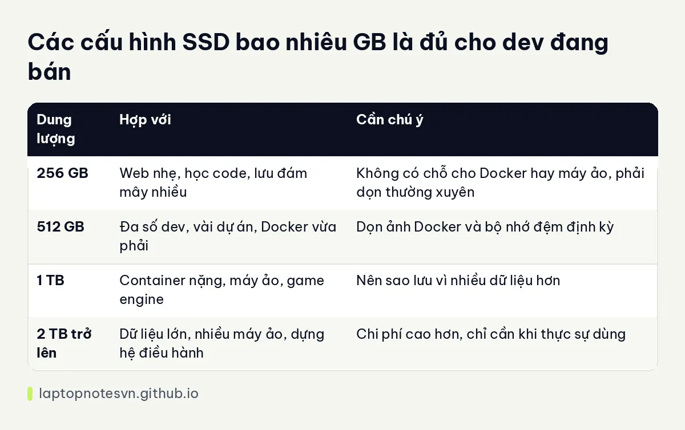

SSD bao nhiêu GB là đủ cho dev - 256, 512 hay 1TB và cách dùng ổ khôn ngoan

Dung lượng ổ SSD là thứ nhiều người đánh giá thấp lúc mua máy rồi tiếc về sau. Ổ cứng của dev chứa nhiều thứ hơn mã nguồn. Phần lớn dung lượng bị chiếm bởi thứ bạn ít khi nghĩ tới: gói thư viện, ảnh Docker, bộ nhớ đệm trình biên dịch, bản chụp máy ảo. Biết thứ gì ăn ổ giúp bạn chọn đúng dung lượng thay vì chọn theo cảm tính.
Bài này đi qua những thứ ăn ổ, ba mức dung lượng và cách dùng ổ gọn gàng, rồi áp vào máy đang bán. Các số liệu dung lượng là ước lượng tư vấn, thực tế khác nhau tùy dự án.
Thứ gì chiếm ổ của dev
Mã nguồn gần như không đáng kể. Một dự án lớn vài trăm MB là cùng. Thứ phình ra là thư viện đã cài: thư mục node_modules mỗi dự án có thể nặng hàng trăm MB, và nếu bạn làm mười dự án thì con số nhân lên rất nhanh. Tương tự với thư mục thư viện của Python, Rust và Java.
Docker là thủ phạm kế tiếp. Mỗi ảnh nền có thể vài trăm MB đến hơn 1GB, thêm các lớp bạn dựng và dữ liệu cơ sở dữ liệu cục bộ. Chỉ cần dùng Docker đều đặn trong vài tháng mà không dọn, ổ đã mất hàng chục GB.
Công cụ phát triển cũng chiếm chỗ. Visual Studio đầy đủ, Android Studio kèm trình giả lập, Xcode, CUDA, các bộ SDK khác nhau đều nặng hàng chục GB mỗi thứ. Cộng thêm hệ điều hành và ứng dụng thường dùng, ổ 256GB hầu như chắc chắn chật.
Cuối cùng là máy ảo và dữ liệu thử. Một máy ảo Linux cơ bản vài chục GB, máy ảo Windows nhiều hơn nữa. Nếu làm dữ liệu hoặc học máy, tập dữ liệu mẫu có thể lên tới hàng chục hay hàng trăm GB.
Ba mức dung lượng
Ổ 256GB chỉ phù hợp khi bạn dùng máy như thiết bị truy cập, kiểu viết web nhẹ, lưu mọi thứ lên kho Git và đám mây. Nó chạy được, nhưng bạn sẽ phải dọn thường xuyên và không có chỗ cho Docker hay máy ảo.
Ổ 512GB là điểm cân bằng cho phần lớn người. Đủ chứa hệ điều hành, công cụ, vài dự án, một ít ảnh Docker. Người dùng Docker nhiều vẫn nên dọn định kỳ.
Ổ 1TB trở lên dành cho người làm container nặng, máy ảo, game engine, hoặc dữ liệu lớn. Dư địa này giúp bạn không phải quản lý từng GB, và ổ có nhiều chỗ trống còn có lợi cho độ bền cũng như tốc độ ghi.
Bài nâng cấp RAM và SSD sau khi mua laptop dev nói về cách thay ổ khi máy còn khe M.2 trống.
Các điểm chính dạng bảng

| Dung lượng | Hợp với | Cần chú ý |
|---|---|---|
| 256 GB | Web nhẹ, học code, lưu đám mây nhiều | Không có chỗ cho Docker hay máy ảo, phải dọn thường xuyên |
| 512 GB | Đa số dev, vài dự án, Docker vừa phải | Dọn ảnh Docker và bộ nhớ đệm định kỳ |
| 1 TB | Container nặng, máy ảo, game engine | Nên sao lưu vì nhiều dữ liệu hơn |
| 2 TB trở lên | Dữ liệu lớn, nhiều máy ảo, dựng hệ điều hành | Chi phí cao hơn, chỉ cần khi thực sự dùng |
Cách dùng ổ gọn gàng
Dọn Docker định kỳ là thói quen đáng tập nhất: xóa ảnh không dùng, container đã dừng và bộ nhớ đệm dựng. Chỉ một lệnh dọn mỗi tháng đã trả lại nhiều chục GB. Tương tự, xóa thư mục thư viện của các dự án cũ, vì chúng luôn cài lại được từ tệp khai báo.
Đặt dự án đang làm trên SSD trong máy, còn tài liệu, ảnh, bản sao lưu cũ chuyển sang ổ ngoài hoặc đám mây. Bản sao lưu cũng không nên chỉ nằm trên chính ổ đó, vì ổ hỏng là mất sạch cả hai.
Nên chừa khoảng một phần năm dung lượng trống. Ổ đầy sát mép thường chậm hơn khi ghi, và hệ điều hành cần chỗ trống để tạo tệp tạm, cập nhật và hibernate. Nghĩa là ổ 512GB nên coi như dùng thoải mái ở mức khoảng 400GB.
Soi thử vài mẫu máy thật
DELL Pro 14 PC14250 (2025) có SSD 256GB, rất hợp với người dùng văn phòng và lập trình nhẹ. Nếu bạn định dùng Docker, hãy tính chuyện nâng ổ hoặc chuyển sang cấu hình khác thay vì cố chạy mọi thứ trên 256GB.
DELL XPS 13 DX13260 (2026) có hai bản SSD là 512GB và 1TB. Vì RAM của máy là loại hàn cố định, bạn nên cân nhắc kỹ cả hai thông số ngay lúc mua, không có đường quay lại.
Trong nhóm có dung lượng lớn sẵn, DELL Pro Max 18 Plus MB18250 - Mobile Workstation (2025) dùng SSD 1TB cùng RAM DDR5 64GB, màn 18 inch QHD+ và card RTX PRO 3000 12GB. Đó là cấu hình hợp người cần máy trạm chứa nhiều dữ liệu, đổi lại máy nặng khoảng 3,25 kg và chủ yếu đặt trên bàn.
Để hình dung nhu cầu bộ nhớ nói chung của người viết code, bạn có thể đọc lập trình viên cần bao nhiêu RAM, phần RAM đi cùng ổ trong mọi cấu hình.
Đăng ngày 09/11/2026